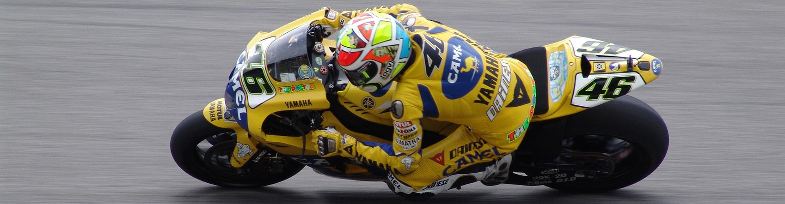
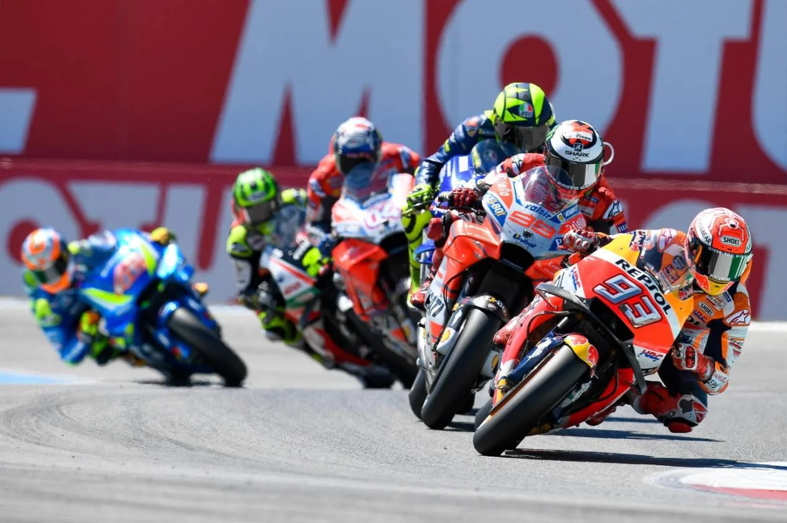
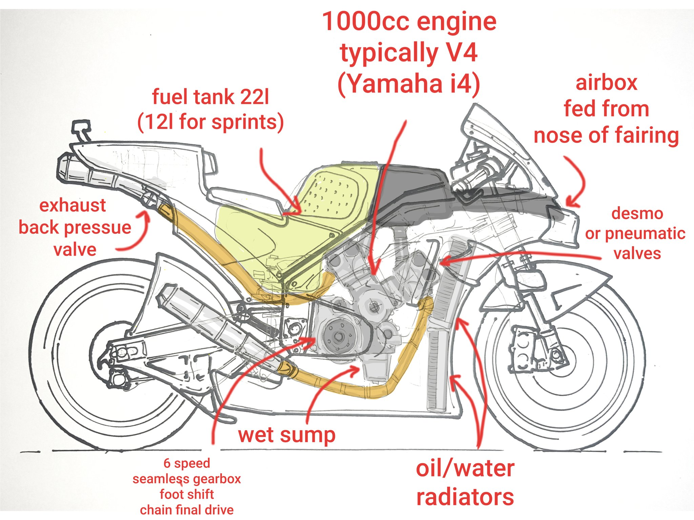
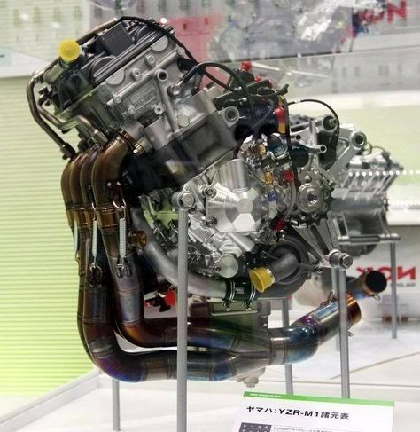
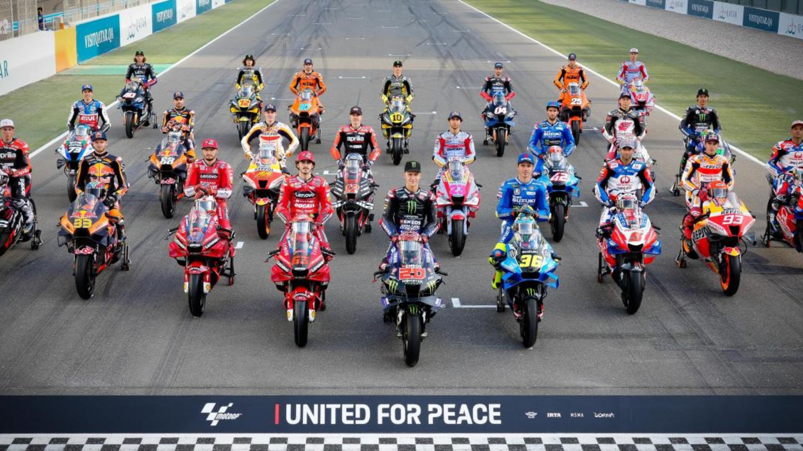
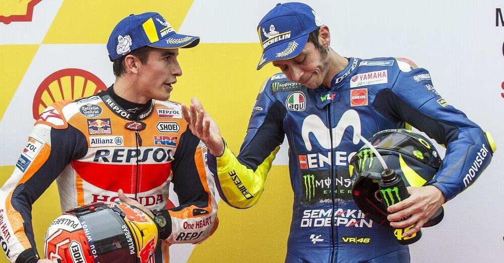

<!DOCTYPE html>
<html lang="en">
<head>
    <meta charset="UTF-8">
    <meta name="viewport" content="width=device-width, initial-scale=1.0">
    <title>Motorsport37 - MotoGP</title>
    <link rel="stylesheet" href="../CSS/reset.css">
    <link rel="stylesheet" href="../CSS/categoria.css">
</head>
</html>
<body>
    <header>
            
            <nav>
                <ul>
                    <li><a href="../index.html">Início</a></li>
                    <li><a href="formula1.html">Formula 1</a></li>
                    <li><a href="motogp.html">MotoGP</a></li>
                    <li><a href="wec.html">WEC</a></li>
                    <li><a href="indy.html">IndyCar</a></li>
                    <li><a href="wrc.html">WRC</a></li>
                    <li><a href="formulad.html">Formula Drift</a></li>
                    <li><a href="nascar.html">Nascar</a></li>
                    <li><a href="game.html">Game</a></li>
                    <li><a href="creditos.html">Créditos</a></li>
                </ul>
            </nav>
            
    </header>


    <div class="conteudo">
    <header>
        <h1>MotoGP</h1>
    </header>


        <h2>Como funciona a MotoGP</h2>

        <p>A MotoGP é a principal categoria de motociclismo de velocidade do mundo. Em contraste com os carros da F1,
           as motos da MotoGP são máquinas ágeis e poderosas, projetadas para alta velocidade em pistas de diferentes características.
           A competição apresenta fabricantes proeminentes, como Yamaha, Honda e Ducati. Pilotos habilidosos disputam o
           Campeonato Mundial de Pilotos, e as equipes buscam o título de Construtores. As corridas acontecem em diversos continentes,
           proporcionando emoções intensas em cada curva.</p>

        

        <h2>Onde a MotoGP corre?</h2>

        <p>A temporada inaugural da MotoGP teve várias etapas, realizadas em diversos locais ao redor do mundo.
           Desde as suas origens, as corridas ocorreram em diferentes continentes, proporcionando emocionantes competições na Europa,
           Ásia, Américas e, mais recentemente, no Oriente Médio.</p>

        <p>Circuitos lendários, como Mugello, Assen, Phillip Island e o Circuito das Américas, continuam a fazer parte do calendário da MotoGP,
           mantendo viva a tradição do esporte em diferentes partes do globo.</p>

           

        <h2>Quando a MotoGP começou?</h2>

        <p>A MotoGP iniciou suas competições como campeonato mundial em 1949, com a primeira corrida realizada na Ilha de Man. Desde então,
           evoluiu para se tornar a competição de motocicletas mais prestigiada do mundo. Pilotos lendários, como Giacomo Agostini, Valentino Rossi e Marc Márquez,
           deixaram suas marcas ao longo dos anos, contribuindo para a rica história do esporte.</p>

           <video controls width="600" height="450">
            <source src="../VID/firstmotogp.mp4" type="video/mp4">
        </video>

        <h2>Como funcionam as motos da MotoGP?</h2>

        <p>As motos da MotoGP são máquinas incrivelmente avançadas, equipadas com motores de alta potência, sistemas de freios de última geração,
           suspensões sofisticadas e tecnologia de ponta. Cada moto é uma obra-prima de engenharia, otimizada para fornecer desempenho excepcional nas pistas.</p>

        <p>A aerodinâmica também desempenha um papel crucial, com carenagens elaboradas e características de design destinadas a melhorar a estabilidade e a velocidade
           das motos em altas velocidades.</p>

           <video controls width="900" height="500">
            <source src="../VID/moto.mp4" type="video/mp4">
        </video>

        <h2>Motor da MotoGP</h2>

        <p>As motos da MotoGP são movidas por motores de alta performance, geralmente motores de quatro tempos. Estes motores são ajustados para oferecer o máximo desempenho,
           combinando potência e eficiência. Sistemas avançados de controle eletrônico gerenciam a entrega de potência, garantindo um desempenho consistente em diferentes condições de corrida.</p>

           <div class="image-container">
            
            
        </div>

        <h2>Quantos pilotos e equipes competem na MotoGP?</h2>

        <p>O atual grid da MotoGP é composta por talentosos pilotos e equipes, com cada equipe geralmente alinhando dois pilotos. Nomes icônicos como Yamaha, Honda e Ducati estão entre as equipes
           que competem no mais alto nível. A competição é feroz, e os pilotos variam de novatos em busca de sua primeira vitória a campeões consagrados que deixaram sua marca na história da MotoGP.</p>

           

        <h2>Quem são os pilotos mais bem-sucedidos na MotoGP?</h2>

        <p>A MotoGP tem seus próprios lendários campeões. Nomes como Giacomo Agostini, Valentino Rossi e Marc Márquez conquistaram múltiplos títulos, deixando uma marca duradoura no mundo das corridas de motocicletas.
           Cada temporada traz novas histórias emocionantes, com pilotos emergentes buscando estabelecer seu lugar entre os grandes da MotoGP.</p>

           
    </div>

    <footer>
        <p>&copy; 2023 MilenaNovka. Todos os direitos reservados.</p>
    </footer>

</body>